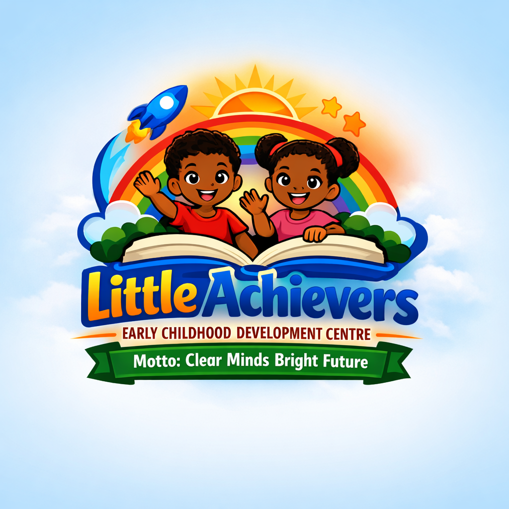

Motto: Clear Minds Bright Futures
At Little Achievers, we nurture young minds through creativity, learning, and play. Our goal is to build confident, curious learners ready for bright futures.
Designed for ages 2–4, our preschool program focuses on early literacy, numeracy, and social skills through play-based learning.
For ages 5–6, our kindergarten curriculum builds strong foundations in reading, writing, math, and creative exploration to prepare children for primary school.
We provide a safe, supportive environment for children after school hours, offering homework help, enrichment activities, and supervised play.
Address: 25 Little Achievers Avenue, Spanish Town, St. Catherine
Phone: 876-649-1234
Email: info@littleachievers.edu.jm
Little Achievers Early Childhood Development Centre is dedicated to fostering creativity, confidence, and curiosity in every child. Our experienced teachers and nurturing environment ensure that children grow academically, socially, and emotionally.